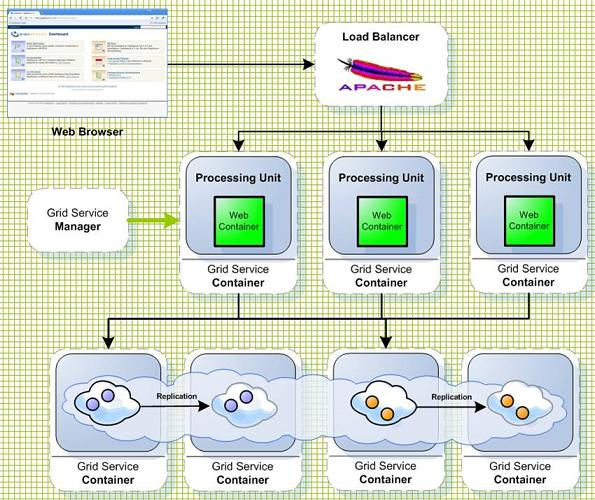

Section Summary: HTTP Session Management
Overview
The GigaSpaces-Jetty integration comes with support for storing the http session in the Space allowing supporting session replication and failover.
The HTTP Session provides the following:
- Avoid using database as the persistent storage media - Better performance and simplify the deployment
- Allow management and control of full lifecycle of web application - From the load-balancer to the data
- Dynamic scalability - Allows the web application to scale up or down based on SLA
- Continuous High-Availability - Allows the application to survive any system failures
- Non intrusive session management or explicit Data Grid API access for fine grain control - Allows multiple web servers to share the same session in transparent manner
There are several ways to configure Space session based support, depending on the definition of which Space and how the Space was started.
This is the simplest form of enabling Space based session support. When deploying (or within the META-INF/spring/pu.properties), the jetty.sessions.spaceUrl property can be set with the space url defining where the sessions will be stored.
For example, if the session will be stored on a remote clustered Space with local cache, the URL can be: jini://*/*/sessionSpace?useLocalCache (assuming the name of the Space is sessionSpace). If the session should be stored on a Space that should be started within the web application (in a collocated manner) in a sync_replicated cluster schema (for example), then the url can be /./sessionSpace?cluster_schema=sync_replicated (note, cluster ids will be automatically set based on the number of web applications deployed).
In case there is already a Space configured within the web application. For example, defined within META-INF/spring/pu.xml, it can be used as the Space where sessions will be stored as well. In this case, the jetty.sessions.spaceUrl can use the special prefix bean. For example, if the Space was defined as a bean with id of sessionSpace, the jetty.sessions.spaceUrl can be set to bean://sessionSpace.
| See the Quick Start Guide for an example how to use the HTTP Session Management. |
Options
Controlling the session Management done via the following properties:
| Property | Description | Default | Mandatory? |
|---|---|---|---|
| jetty.sessions.spaceUrl | specifies the URL of the space with the HTTP session store will be backed. Use the bean:// notation to reference a space proxy defined within the META-INF/spring/pu.xml file. | jini://*/*/sessionSpace?useLocalCache /./sessionSpace?cluster_schema=replicated bean://sessionSpace |
Yes |
| jetty.sessions.scavengePeriod | Determines how often the web container will check for expired sessions. Set in seconds. | 300 seconds (5 minutes) | No |
| jetty.sessions.savePeriod | How often an actual update of a non dirty session will be performed to the Space. Set in seconds | 60 seconds. This is useful for cases where a session attribute is not updated explicitly using the HttpSession#setAttribute method. More importantly, it makes sure to report the last time the user has accessed the application to the space so that the user session will not expire | No |
| jetty.sessions.timeout | Determines the HTTP session timeout in minutes (similar to session-timeout element in web.xml | 30 minutes | No |
| jetty.sessions.lease | The lease of the SessionData that is written to the Space | Long.MAX_VALUE | No |
 OpenSpaces integration implements Jetty SessionManager and SessionIdManager in GigaSesssionManager and GigaSessionIdManager. When setting the jetty.sessions.spaceUrl they get automatically set as the session manager and session id manager of the web app.
OpenSpaces integration implements Jetty SessionManager and SessionIdManager in GigaSesssionManager and GigaSessionIdManager. When setting the jetty.sessions.spaceUrl they get automatically set as the session manager and session id manager of the web app.
Deployment Topologies
The HTTP Session support several Deployment Topologies:
Embedded Replicated
- Support only Limited amount of Sessions

Partitioned+Replicated
- Session Data is partitioned across multiple machines
- Allows unlimited amount of data to be stored in memory
Partitioned+Replicated with Local-Cache
- Support for read mostly scenario via local cache running within the application server memory address.
Avoid remote calls when there are repeated read calls for Session data that are stored in memory across multiple machines. - Provide total linear scalability.